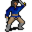

Thyrope Splathershed¶Where to find Thyrope Splathershed: Remgard: remgard_tavern0
{ .sprite }
| Type | NPC (can be spoken to; cannot be attacked) |
| Role | Starts A map of the Great Lake Laeroth |
| Found in | Remgard |
| Entry ID | ll2_mapmaker |
| Introduced | v0.8.18 |
Quests¶
- A map of the Great Lake Laeroth: stages 10, 12, 910
Dialogue simulator¶
Set the quest stages, items and other conditions that apply to your game, then start the conversation with Thyrope Splathershed. The simulator applies the game's own rules: it performs the same silent checks, offers only the options that would be shown in the game, and applies their effects (quest stages, items handed over, rewards) as the conversation proceeds.
Rules verified against v0.8.18 game code (ConversationController.java) and dialogue data.
Dialogue (41 lines)
What the dialogue says, exactly as in the game files. Lines are listed once; links jump to the line a choice leads to.
ll2_mapmaker Thyrope Splathershed: “Hello, child. Sit down, you may keep me company.”
- “Who are you?” (if NOT reached stage 10 of A map of the Great Lake Laeroth) → ll2_mapmaker_10
- “I have earplugs now.” (if carry 4× Earplugs) → ll2_mapmaker_9
- “I have beeswax with me now.” (if NOT carry 4× Earplugs; carry 4× Bees wax; reached stage 12 of A map of the Great Lake Laeroth) → ll2_mapmaker_6a
- “We have a problem sir. There's a rocky reef that the captain doesn't want to sail past. He's afraid of some singing…” (if reached stage 40 of A map of the Great Lake Laeroth; NOT reached stage 42 of A map of the Great Lake Laeroth) → ll2_mapmaker_2
- “I have found all the new parts for your map.” (if faction “ll2_maps” ≥ 22) → ll2_mapmaker_90
- “I have found some of the new parts for your map.” (if faction “ll2_maps” ≥ 1; NOT faction “ll2_maps” ≥ 22) → ll2_mapmaker_80
ll2_mapmaker_10 Thyrope Splathershed: “I am Thyrope Splathershed, the famous scholar and cartographer.”
- “Splathershed? Haven't I heard that name before?” → ll2_mapmaker_11
- “A cartographer?” → ll2_mapmaker_10a
ll2_mapmaker_9 Thyrope Splathershed: “Good, good. Then off you go - the ship is waiting!”
ll2_mapmaker_6a Thyrope Splathershed: “Beeswax? From Leofric I hope. Good, give it to me. I can create earplugs for you.”
- “Here you are.” → ll2_mapmaker_7
ll2_mapmaker_2 Thyrope Splathershed: “Oh, really? We have sirens here in the lake? Fascinating!”
- “You know what sirens are?” → ll2_mapmaker_3
ll2_mapmaker_90 Thyrope Splathershed: “Really!! That fast? I am extremely impressed. And delighted!”
- “The cruise was fun.” → ll2_mapmaker_91
ll2_mapmaker_80 Thyrope Splathershed: “Ohh, I'm almost dying to have the entire map complete.”
ll2_mapmaker_11 Thyrope Splathershed: “You probably know my brother, who wrote the famous treatise on the history of Dhayavar.”
- “Maybe. What are you doing here?” → ll2_mapmaker_13
- “Talking of brothers - have you seen my brother Andor?” → ll2_mapmaker_12
ll2_mapmaker_10a Thyrope Splathershed: “A map maker.”
- “Then you must travel a lot. Have you seen my brother Andor?” → ll2_mapmaker_12
ll2_mapmaker_7 Dummy NPC: “With practiced movements, Thyrope made several pairs of earplugs.”
- Next (if hand over 4× Bees wax) → ll2_mapmaker_8
ll2_mapmaker_3 Thyrope Splathershed: “Of course! Everyone with a bit of education knows about them.”
- Next → ll2_mapmaker_4
ll2_mapmaker_91 (silent check: the first matching branch below is taken)
- branch 1 (if reached stage 26 of A map of the Great Lake Laeroth) → ll2_mapmaker_91a
- branch 2 → ll2_mapmaker_91b
ll2_mapmaker_13 Thyrope Splathershed: “There's less and less terra incognita... sorry, children don't understand these technical terms - I mean unknown parts of the world. My work is getting more and more difficult.”
- Next → ll2_mapmaker_14
ll2_mapmaker_12 Thyrope Splathershed: “Probably not. I mainly focus on the environment so I can create the most accurate maps possible.”
- Next → ll2_mapmaker_13
ll2_mapmaker_8 Thyrope Splathershed: “Here, take these earplugs. The wax was perfect for them, they'll work well.” — effects: gives 4× Earplugs
- “Thank you. I'm going to go and try them out right away.” → conversation ends
ll2_mapmaker_4 Thyrope Splathershed: “However, no one has yet returned alive to report what they sing - if that's what they do.”
- “Then my trip is already over.” → ll2_mapmaker_5
ll2_mapmaker_91a Dummy NPC: “You talk of how you nearly got stuck at Kalypso on a paradise island.”
- Next → ll2_mapmaker_91b
ll2_mapmaker_91b Dummy NPC: “You explain how you passed by the sirens.”
- Next → ll2_mapmaker_92
ll2_mapmaker_14 Thyrope Splathershed: “Here in Remgard, I've struck gold. The great lake here is well known in the coastal regions - but what's in the lake itself?”
- Next → ll2_mapmaker_15
ll2_mapmaker_5 Thyrope Splathershed: “No, of course not. Just put something into your ears. Wax should work. Do you have beeswax with you?”
- “Luckily yes, here it is.” (if carry 4× Bees wax) → ll2_mapmaker_7
- “Unfortunately no.” (if NOT carry 4× Bees wax) → ll2_mapmaker_6
ll2_mapmaker_92 (silent check: the first matching branch below is taken)
- branch 1 (if reached stage 36 of A map of the Great Lake Laeroth) → ll2_mapmaker_92a
- branch 2 → ll2_mapmaker_93
ll2_mapmaker_15 Thyrope Splathershed: “That's what I want to find out, and then I'll become famous with my map of the great lake.”
- “So you want to charter a ship and explore the lake? Sounds exciting.” → ll2_mapmaker_16
ll2_mapmaker_6 Thyrope Splathershed: “You can get the best beeswax directly from a beekeeper. I know one: Leofric, I would trust him.” — effects: sets stage 12 of A map of the Great Lake Laeroth
- “Leofric? Where can I find him?” → ll2_mapmaker_6b
- “Oh, that guy. I remember him.” → ll2_mapmaker_6c
ll2_mapmaker_92a Dummy NPC: “You talk of the captain and his crew being turned into pigs.”
- Next → ll2_mapmaker_93
ll2_mapmaker_93 (silent check: the first matching branch below is taken)
- branch 1 (if reached stage 59 of A map of the Great Lake Laeroth) → ll2_mapmaker_93a
- branch 2 → ll2_mapmaker_94
ll2_mapmaker_16 Thyrope Splathershed: “What? No, absolutely not!”
- Next → ll2_mapmaker_17
ll2_mapmaker_6b Thyrope Splathershed: “When he isn't out and about, he's at his bee meadow behind the Foaming Flask - in case you know it, kid.”
- “A rather crowded and noisy place.” → ll2_mapmaker_6c
ll2_mapmaker_6c Thyrope Splathershed: “You need one piece of wax for each pair of earplugs. So, four in total - for yourself, and for the crew.”
ll2_mapmaker_93a Dummy NPC: “You talk of blinded cyclops and sheep.”
- Next → ll2_mapmaker_94
ll2_mapmaker_94 (silent check: the first matching branch below is taken)
- branch 1 (if reached stage 60 of A map of the Great Lake Laeroth) → ll2_mapmaker_94a
- branch 2 → ll2_mapmaker_95
ll2_mapmaker_17 Thyrope Splathershed: “I'm not allowed to go myself. It would be an immeasurable loss to humanity if something were to happen to me.”
- Next → ll2_mapmaker_18
ll2_mapmaker_94a Dummy NPC: “And how the six-headed monster Scylla had attacked your ship.”
- Next → ll2_mapmaker_95
ll2_mapmaker_95 (silent check: the first matching branch below is taken)
- branch 1 (if reached stage 78 of A map of the Great Lake Laeroth) → ll2_mapmaker_95a
- branch 2 → ll2_mapmaker_96
ll2_mapmaker_18 Thyrope Splathershed: “But I'm looking for someone to make the trip and tell me about it.”
- Next → ll2_mapmaker_19
ll2_mapmaker_95a Dummy NPC: “And finally, you raved about the gloomy land beneath the lake. What it was like to be swept into the abyss with the ship, and then to resurface again.”
- Next → ll2_mapmaker_96
ll2_mapmaker_96 Dummy NPC: “Thyrope Splathershed didn't seem entirely sure whether to believe your incredible story.”
- Next → ll2_mapmaker_97
ll2_mapmaker_19 Thyrope Splathershed: “You look like you don't have anything better to do right now anyway. Will you make the trip for me?”
- “[muttering] Nothing to do? If you only knew...” → ll2_mapmaker_20
ll2_mapmaker_97 Thyrope Splathershed: “Thank you so much for these extremely entertaining experiences. Perhaps I'll write a story about them sometime.”
- Next → ll2_mapmaker_99
ll2_mapmaker_20 Thyrope Splathershed: “The ship is ready to depart from the dock, and the passage has already been paid for.”
- “Hmm. It sounds exciting. I agree to your proposal.” → ll2_mapmaker_21
ll2_mapmaker_99 Thyrope Splathershed: “As a reward you can use Captain Burry and his ship whenever you want. I will pay for it.” — effects: sets stage 910 of A map of the Great Lake Laeroth
- “Oh, nice - thank you!” → conversation ends
ll2_mapmaker_21 Thyrope Splathershed: “So then, Captain Burry will greet you on board!” — effects: sets stage 10 of A map of the Great Lake Laeroth
Version history¶
| Version | Change |
|---|---|
| v0.8.18 | Added Dialogue: 41 lines added |
Verified against v0.8.18 and every earlier release back to v0.7.0 (game data compared release by release).
Technical information
| Entry ID | ll2_mapmaker |
| Spawn group | ll2_mapmaker |
| Loot table | – |
| Conversation | ll2_mapmaker |
| Faction | – |
| Movement | – |
| Icon | monsters_ld1:17 |
| Defined in | res/raw/monsterlist_lake_laeroth_2.json |
Raw data:
{
"id": "ll2_mapmaker",
"name": "Thyrope Splathershed",
"iconID": "monsters_ld1:17",
"monsterClass": "humanoid",
"spawnGroup": "ll2_mapmaker",
"phraseID": "ll2_mapmaker"
}
Community notes¶
Written by players, not generated from game data. Observations: what players notice in-game · Lore: the in-world story · Trivia: real-world facts, references, development history · Theory / speculation: unconfirmed ideas; may just be unfinished content
Observations¶
No notes yet. Contributions are welcome: add a note.
Lore¶
No notes yet. Contributions are welcome: add a note.
Trivia¶
No notes yet. Contributions are welcome: add a note.
Theory / speculation¶
No notes yet. Contributions are welcome: add a note.
Data from v0.8.18